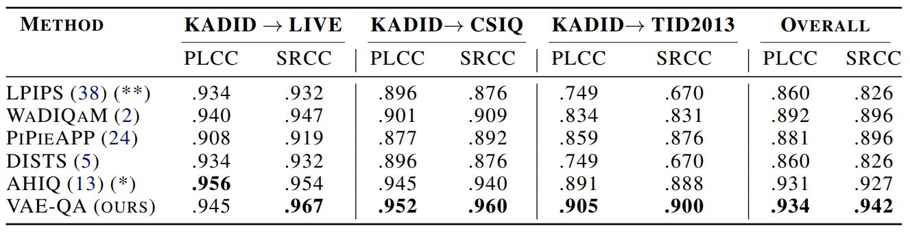
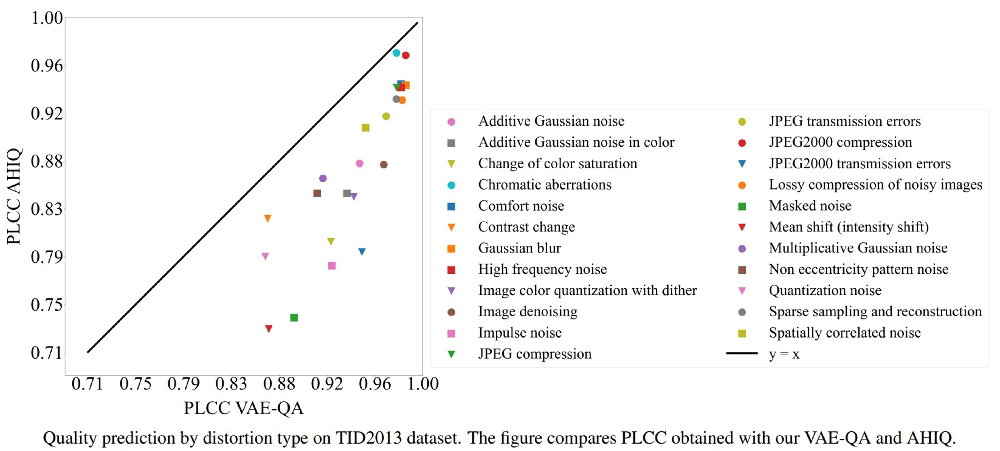
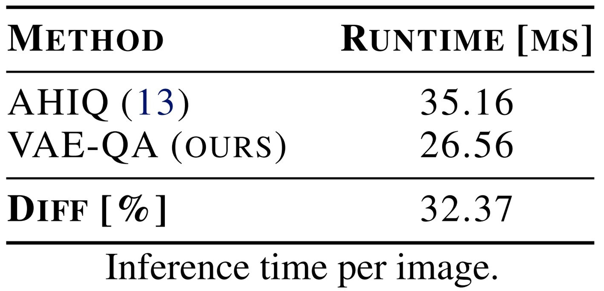

Main results
Cross-dataset evaluation
To evaluate the generalization performance of the model, we trained the model on the entire KADID-10k dataset and evaluated it on the full set of LIVE, CSIQ, and TID2013 datasets. The table below report the average PLCC and SRCC values of this experiment. VAE-QA consistently improves over current methods.
We further tested generalization by training the model on the TID2013 dataset and testing on the LIVE and CSIQ datasets. The table below shows the results of this experiment. Our model generalizes robustly to new data distributions.
Within-dataset evaluation
We also evaluate the model by training and testing it on images from the same data distribution. The table below shows the linear and non-linear correlation over the test split for each of the 3 standard datasets. For LIVE and CSIQ datasets, VAE-QA shows a small improvement, while it improves considerably for TID2013 and across datasets overall.
The figure below shows the relation between predicted and ground-truth quality. The scatter plot suggests this relation is largely linear in this regime.

Correlation by distortion type
To obtain more insight into the performance of VAE-QA, we measured the quality of quality prediction for different types of distortion. The figure below compares the prediction accuracy measured using PLCC, for our method and AHIQ, the current SoTA. The VAE representation underlying VAE-QA, appears to help in all distortion types, and provides on average larger improvements for those types that are challenging for AHIQ (masked noise and intensity shift).
Runtime and Memory Footprint
We compare the memory footprint and runtime of our method with the current state-of-the-art method AHIQ. Our method demonstrates a smaller memory footprint and faster inference time.

BibTeX
If you find our work useful, please cite our paper:
@misc{raviv2024assessing,
title={Assessing Image Quality Using a Simple Generative Representation},
author={Simon Raviv and Gal Chechik},
year={2024},
eprint={2404.18178},
archivePrefix={arXiv},
primaryClass={eess.IV}
}